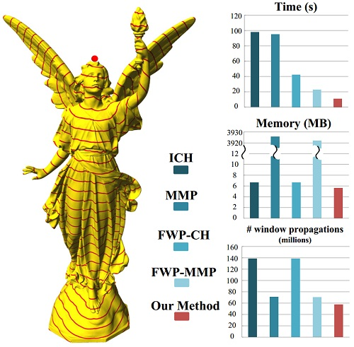
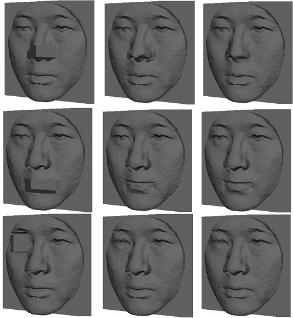

|  |
Fast and Exact Discrete Geodesic Computation Based on Triangle-Oriented Wavefront Propagation Yipeng Qin*, Xiaoguang Han*, Hongchuan Yu, Yizhou Yu, Jianjun Zhang ACM Transaction on Graphics (TOG) Vol 35, No 4, 2016 (Proceedings of ACM SIGGRAPH 2016). |
|  |
Eigenspace-based surface completeness Hongchuan Yu, Yipeng Qin, Jianjun Zhang. Journal of Electronic Imaging, 24(2), 2015. |
Yipeng Qin. 2016. Idle-Bandwidth Self-Adaption Method for Internet Video Streaming Media Transmission. Chinese Patent. Application Number: CN 103237232 A . Patent Number: ZL 2013 1 0108664.5 . Filed March 29, 2013, and issued April 27, 2016.